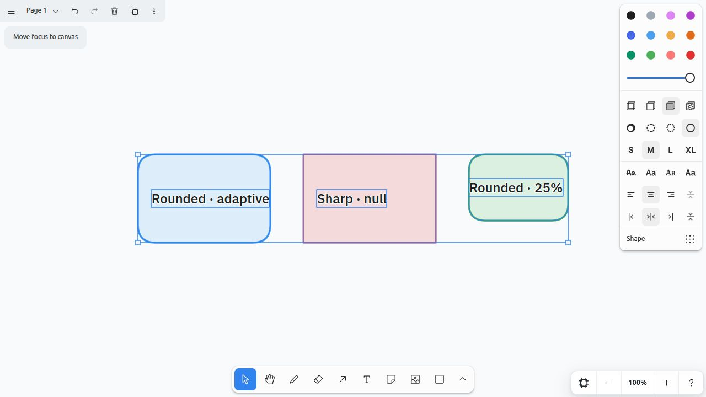

Excalidraw corners now survive paste.
SystemSketch keeps tldraw’s stock Excalidraw converter, but replaces the one geometry decision it cannot represent: rounded rectangles. Sharp rectangles remain sharp, while adaptive and proportional corners retain Excalidraw’s radius semantics.
Implemented on the supported extension seams
One custom geo, one external-content handler, and a temporary shape-creation transform. No converter fork and no replacement canvas.
Real clipboard proof
This is the running app after pasting a genuine excalidraw/clipboard JSON payload—not a mockup.

min(25% × 160, 32)25% × 120roundness: nullThe narrow path
The stock converter retains ownership of every behavior except the missing rectangle outline.
Elements, bindings, labels, styles, groups and files.
putExcalidrawContent creates native tldraw content.
Only rounded rectangle geo records change type and retain roundness in meta.
Selection, resize, fill, dash, text, snapping, links and export stay native.
Radius lab
Resize the source rectangle and change its adaptive cap. The same formula runs when an imported shape is later resized in tldraw.
Adaptive roundness · type 3
Acceptance evidence
Automated contracts protect the math and queue assumption; the live run protects the browser clipboard and render path.
| Proof | What it protects | Observed result |
|---|---|---|
| Roundness parser | Malformed external JSON cannot create invalid geometry. | Pass |
| Radius rules | Legacy, proportional, adaptive default, and authored cap. | Pass |
| Mixed-paste fixture | Texts, arrows and groups do not consume the source-geo queue. | Pass |
| Rendered SVG inspection | Adaptive M 32 0, proportional M 30 0, sharp path has no curves. | Pass |
| Browser reload | Custom geo type and roundness metadata survive persistence. | Pass |
npm run check + build | TypeScript, 8 frontend tests, 5 Python tests, and production bundle. | Pass |
Ownership boundary
The adapter deliberately owns less than the feature appears to touch.
The missing fidelity
- Roundness validation and exact radius math
- Quadratic-equivalent rounded rectangle path
- Custom geo type and persisted roundness metadata
- Mixed-source ordering regression
The whiteboard behavior
- Clipboard parsing and all other element conversions
- Labels, groups, links, bindings, placement and selection
- Resize, style, snapping, hit testing and SVG export
- Document store and persistence
Open the work
The production adapter, executable evidence, and originating investigation.
src/excalidrawInterop.tsGeo path, transformer, wrapper, and handler registration.
Regressionsrc/excalidrawInterop.test.tsRadius, parser, path, malformed input, and mixed paste.
Decision recordrounded-corners investigationRoot cause, alternatives, sources, and the chosen extension path.